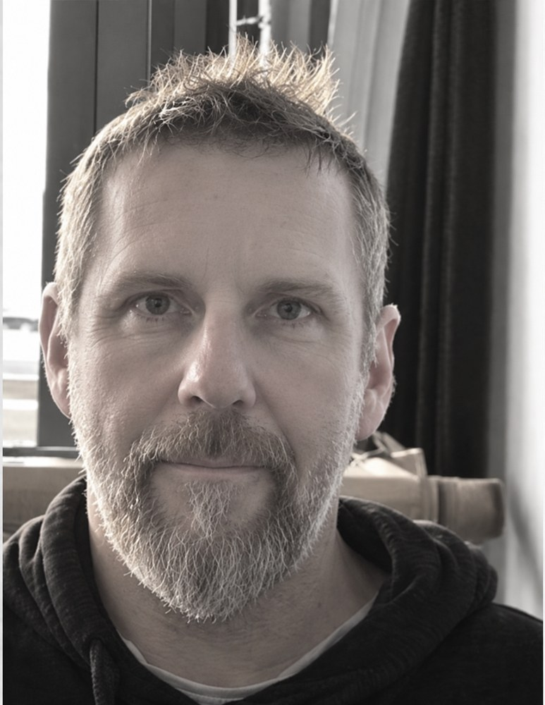

Expert SI RH chez Orange · Intelligence artificielle agentique · Intégration SI
Toulouse · Bois-de-la-Pierre · Occitanie · France

Profil
Expert informatique chez Orange depuis plus de vingt ans, je travaille
actuellement sur l'intégration de l'intelligence artificielle agentique
dans le système d'information des ressources humaines du Groupe.
Basé dans la région toulousaine, mon parcours couvre les systèmes
d'information RH, l'intégration de solutions internes et SaaS,
les API, l'IAM/SSO, le cloud, la cybersécurité ainsi que
l'innovation et la R&D dans les télécommunications.
Avant de rejoindre France Télécom en 2004, j'ai travaillé en Irlande
comme ingénieur indépendant dans les réseaux et télécommunications,
notamment sur le déploiement de réseaux radio.
En 2026, je figure parmi les lauréats du
Skills Event 2026 d'Orange, un événement international
de développement des compétences ayant réuni près de 30 000
collaborateurs à travers le monde autour notamment de l'intelligence
artificielle, de la cybersécurité, de la data et du cloud.
Orange · DSI Corporate SI RH2015 – aujourd'hui · Blagnac / Toulouse
Expertise technique et conseil sur les systèmes d'information RH.
Intégration de solutions internes et SaaS, API, identité et accès,
cloud et cybersécurité. Travaux actuels autour de l'intégration
de l'intelligence artificielle agentique dans le SI RH.
Orange Business Services2011 – 2015 · Toulouse
Pilotage de projets et d'applications IT, sécurité et coordination
d'équipes de développement.
Nordnet · France Télécom2010 – 2011 · Lille / Wasquehal
Responsable de projets et de services numériques.
France Télécom R&D / Orange Labs2004 – 2010 · Caen / Issy-les-Moulineaux
Recherche, innovation et prototypage dans les télécommunications,
les services IP, les réseaux domestiques et les services multimédias.
Ingénieur R&D puis responsable de projets d'innovation.
Network & Telecom Engineer2002 – 2004 · Irlande
Conception et déploiement de réseaux radio et d'infrastructures
réseau pour des organisations publiques et privées.
Formation
University of Limerick · Ireland2000 – 2001
Master's Degree in Computer Engineering – Telecommunications Systems
Honours
University of Limerick · Ireland1995 – 2000
Bachelor's Degree in Science & Technology Education
Honours
Distinctions
Lauréat · Orange Skills Event 20262026
Parmi les lauréats du Skills Event 2026, événement international
de développement des compétences d'Orange ayant réuni près de
30 000 collaborateurs à travers le monde autour notamment de
l'intelligence artificielle, de la cybersécurité, de la data
et du cloud.
Nomination · Orange Innovation Award2008
Nomination dans le cadre de travaux d'innovation réalisés au sein
de France Télécom R&D / Orange Labs.
Innovation & R&D
14 dépôts de brevets / publications internationales
Travaux d'invention réalisés dans le cadre de France Télécom
R&D / Orange Labs.
Présentation de la Livebox v2 et du Universal Decoder lors
d'Orange Collections 2009.